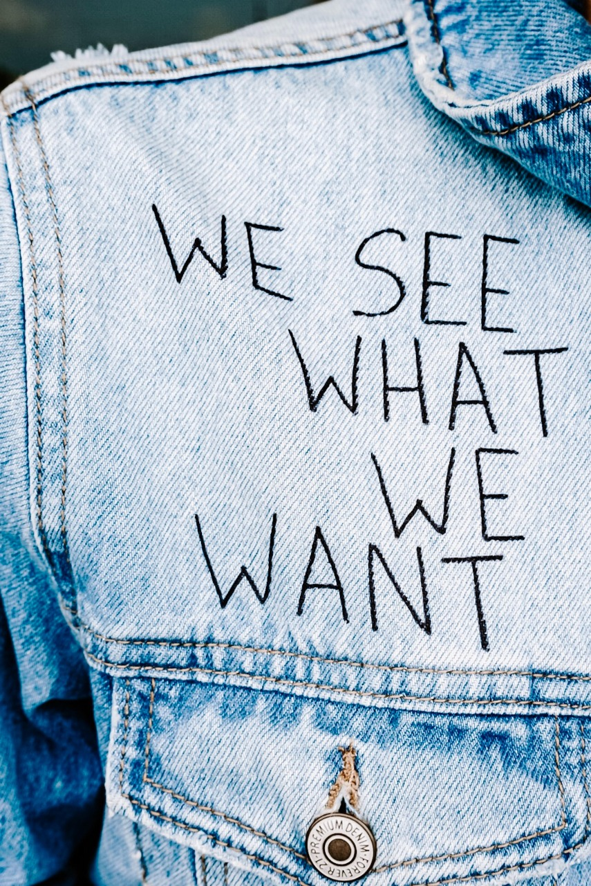

Have you ever noticed, whenever someone cries, we always say, it’s okay, don’t cry. 😢
But when someone is smiling, do we say, don’t smile? 🤔
Why can’t we accept sad emotions; crying is after all a release of built-up emotions.
Did you know, like energy, emotions also are contagious? What else are contagious...yawns :D 💯
Can you watch this without yawning?
It is difficult, so then what is easy?
Changing your mood...It took less than a minute to change your mood.
मौसम भी बदल रहा है और वक़्त तो बदलता ही रहता है, तो आप क्यों स्थिर है?
आज का ज्ञान 😬
हा अभी बाकी है :P
Some see it 6, some see it 9- कौन सही कौन गलत?
